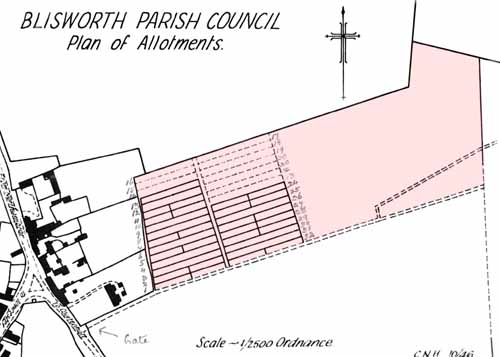

The Story of our Community Fields and Allotments
Putting aside for the moment the actual ownership, the village fields that
have community status are the school playground, the Stoke Road allotment
field, the Playing Field off the Courteenhall Road, the Allotment Gardens
next to that playing field and the play area off Eastfield behind the Village
Hall. It seems worthwhile to put on record how these
areas either evolved out of a feudal village or were 'seized upon' by
the community.
Background: The Parish Lands incl. the field off the Courteenhall Road.
In the late 1400's the whole Town of Blisworth and the Manor
comprising of 100's of acres belonged to Roger Wake. The earliest document
which survives (1619) concerning fields separate from the Manor testifies to
Blisworth Town Lands consisting of 11 small pieces, many of only a half-acre, of
land from which an income was granted in perpetuity to provide ornaments and
continuous burning lights or tapers in the Parish Church. It seems likely
the lands were provided by the Wake family. During the reformation the
lands were taken by individuals but were later, with much ecclesiastical
pressure, returned as 'Parish Lands' managed by 12 trustees to provide
income for church repairs, the poor and any other laudable cause the
trustees would nominate. Thus the parish had a poor fund. The
fields, which totalled about 7½ acres, are listed by name and from this it is
clear they are scattered over the parish with some concentration near Cliff
Hill. A 'messuage' was included which one can surmise was the beginnings of
Rectory Farm.
The inclosure of fields that was aimed at achieving more efficient farming
was virtually complete in Blisworth by 1815 but became formalised in the
Inclosure Act of 1845. Since in the Grafton 1838 survey, a field of about
the right size, off to the south of the Northampton Road at the edge of the
parish, was labelled as belonging to the "Ministers and Church of Blisworth"
we can assume the scattered lots were condensed there at about the time of the
inclosures. However, a record of detailed discussions about the
Parish Lands is available only from 1894 onwards when the Blisworth Parish
Council was formed. They refer to two fields only, one on the right off
the Towcester Road (approx. 1 acre) and one on Cliff Hill amounting to 10½
acres. The latter we can immediately recognise today as having a community
status. It is likely that a combination of the 11 ancient
fields amounting to 7 acres, plus the farm was condensed at some point (eg.
during the inclosure process) into the two fields
totalling 11½ acres, the farm being presumably sold to the Duke of Grafton.
The field along the Northampton Road was perhaps temporarily assigned to the
Church. The trusteeship of the Parish
Lands must have undergone a substantial change in Victorian times because, by
1900, they were administered by the Parish Council on behalf of the District
Council and were let to farmers or smallholders for monies which fed into the
District Council along with some Blisworth ratepayer's money. The returns
to Blisworth amounted to some support for the poor and evidently some highways
and sanitation maintenance. The Parish Lands, however, were the property
of the Duke of Grafton.
By 1919 the Duke of Grafton was ready to sell much of his estate and most of
his holding in Blisworth parish (unable to sell, he retained ownership of one or two farms until
about 1938). The Northamptonshire County Council would purchase the Parish
Lands from the Duke and Blisworth Parish Council was favoured as the tenant (by
prior arrangement) of the field on Cliff Hill. The other field was let
to a smallholder by the NCC until, in about 1970, the field was bought by the
Parish Council who continue to let it out.
The New Parish Allotments and the Playing Field

By 1905, the Blisworth Parish Council had set up the Allotment
Gardens on about 4 acres of the
Council field off the Courteenhall Road and sublet plots of typically 20 poles
to parishioners. At times, especially from 1920 to 1945, the occupancy of
the allotments was patchy and some rent to the County Council was waived. The
balance of the field was let to local farmers until 1962 when it was
effectively sold to the Blisworth Playing Field Association.
This was as a result of hard work by Sid Whitmore of the Blisworth Parish Council and Len
Piggott, then headmaster at the school. The action was facilitated by a realisation that the County Council could not expect to enlarge the village by
such a margin without simultaneously allowing a substantial improvement in amenities.
The Playing Fields Association was vested with the task of subletting the field to the
Blisworth Football Club and to the Scouts movement. The inset plan shows
the layout in 1946, the field divided between an allotment section and a patch
let to a farmer.
The allotment field continued with the Parish Council as the tenant until 1983 when they purchased the field from the County Council. Recently, in 2005, the Parish Council allotments were under-subscribed and about half of the total area was let to the Blisworth Football Club for them to construct an additional football pitch.
Background: Village efforts to
obtained a recreation field. The achievement of the Playing
Field Association in 1964 ended a period of over 60 years through
which parishioners had lobbied for a recreation field. For the sake of as
complete history as possible, their difficulties are recounted in the following.
In the Parish Council minutes for 1896 was a first mention. The Duke of Grafton
unfortunately set too high a rent to be accepted for the grass field at the Elm
Tree corner. There was nothing more recorded until after that particular field
was cleared of ironstone and levelled in 1910 for the building of the proposed
new school. A second petition was sent in, this time applying for terms for the field
immediately behind the school. The petition was repeated in 1913 and again in
1919 when it was linked to a proposed Great War Peace Memorial. However,
success eluded the Parish Council because the Duke was by then planning to sell
a substantial part of his estate to cover debt. He sold the plot with the corner house
at the Cross to
J.H. Westley in the Grafton sale of 1919/20. In 1925 the parish council sent a
letter to the Local Government Board for advice on whether a Parish Council had
any powers for purchase (ie. compulsory purchase). The reply is not recorded in
the minutes but Westley offered 2 acres behind the school in June 1927 at terms
that were not disclosed. The Parish Council were under the impression that
"two acres is insufficient for the number of people who will use the
field", a reasonable assessment because it would have been of a non-ideal
shape, and planned an open meeting for Sept 1927 to discuss what may happen
next. But the meeting got nowhere and for 30 years no suitable field could be
found. Various fields were used informally by football and cricket teams
and the school was granted fairly regular use of a grass field by one farmer,
Mr. Bonsor.
1. The Village Hall The Playing Fields Association merged its interests with the Village Hall Association in around 1960. The latter association was already in possession of the old infants school in the Stoke Road (donated by the Church in c. 1938). It was from the sale this building that the merged association could begin its long haul of fundraising cumulating in the purchase of the old senior school in the Stoke Road. This was followed by its refurbishment and conversion to a Village Hall in the 1970's, organised by the then chairman of the Parish Council, Robin Philtrip. At about that time, developers were continuing their expansion into land once occupied by the old bacon factory, which was adjacent and behind the Village Hall. The developers were persuaded to attenuate the housing development a little and concede that the vendors of the land (Buswell Company) had verbally agreed to donate a play area for young children - this was ratified in a letter provided in some haste. The developers later sold, at a moderate price, a small piece of land adjacent to the play area that would be required for a car-park to serve the Village Hall. Access to these is from the street called Eastfield.
2. An Oversight At a time when the access road to the Courteenhall allotments and the playing field was in need of repairs, it was discovered that the road was actually still vested with the Duke of Grafton. It was adopted by the combined associations, in order to do repairs, and was later sold to the owner of the adjacent farm land - whilst retaining rights of access. The anomaly had arisen because the road was overlooked by the Duke's agent at the time of the sale in 1919. The reason is not hard to find; on one side there were the Parish Lands and on the other there was a parcel of farm land incorporated into a 90 acre unit for sale. At the far end of the road was the village windmill until c.1880 and the Duke routinely let the road to the miller for a very nominal sum to ensure his access. Nearly a 100 years later, the Duke's descendant was unlikely to notice the ownership of this "cart track" since the mill had been demolished years before. Interestingly, this path to the windmill maintained its alignment during the extensive open-mining in both fields in the late 19th century, the same mining project which affected the Stoke Road allotment field mentioned next.
The Stoke Road Allotment Field.
It is commonly thought, as a result of the enclosure of the fields around Blisworth and the loss of common land by the construction of the Grand Junction Canal in c.1800 the Duke of Grafton, sometime between 1831 and the date of a detailed survey (1838), had laid out an array of about 100 allotment plots of varying sizes. However, much common land for arable crops had been enclosed before 1800 and so it seems remarkably tardy of the Duke to wait until the 1830s before providing allotments; how did the villagers manage in the early 19th century?
This new allotment field off the Stoke Road amounted to nearly 10 acres on what was previously a manorial rabbit warren - the field was called Coneygres. The take-up of the plots must have been patchy for, in 1856, the Duke granted opencast mining of ironstone across this field as another generator of income for the estate. The mining extended into other fields around the village until around 1912 when the mining tailed off. The Parish Council would continue to pay rates for the field to the Duke having collected rent from the allotmenters. The land lost to the miners was rebated by means of the council placing a charge upon the miners according to how much land the miners were using. For this calculation they were deemed to be only using a narrow pit where digging was actually taking place. As the pit traversed the field it maintained its area at about the same level but left in its wake a ground that was nothing but subsoil. Fortunately the pit across the allotment field was traversed only a little to the north, it being used primarily to accommodate a horse railway running out to other fields on both sides of the Courteenhall Road. The area to the north of the railway was mined.
When the Duke of Grafton held his sale in 1919 it was the Exors. to Pickering Phipps, being the current tenant, who bought the field, along with other fields as a mining investment. This firm also owned the Hunsbury Ironworks but on Sept 30th, 1935, the interests were taken over by Richard, Thomas and Baldwin Co. Ltd. (RTB). There is a map of the allotment field that relates to this conveyance, which shows that the twin cottages were sold with the allotment field and therefore, for some reason, Phipps must have seen potential in them in 1919 at the time of the Grafton sale. The RTB company was to remain in the village, as an active owner of lands also to the west of the village, and mine an area known to contain good measures of ironstone. The village allotmenteers, who were originally paying rent to the Duke via the Parish Council, continued after 1935 by paying to RTB, at a land-agent's office in George Row, Northampton.
In about 1955 RTB successfully committed about 3 acres of the allotment field for development by the Acme Building Company. In c1957/8 Acme completed the development, 35 houses in a cu-de-sac called Greenside, which must have encouraged RTB to try develop more. The name suggested by the Parish Council, ie. George Freeston, for the development was Drum Well Close but the newcomers did not approve of the name; 'Green Side' reminded villagers of The Green that was lost to the excavation for the canal.
Allotment use was not all that popular in the 1950s and 60s, for the village had not yet become enlarged, so the gardeners that were displaced from the developed 3 acres could fairly easily be accommodated in the 4½ acres which remained. In 1960 RTB decided to try to develop the whole field for housing and gave notice to the villagers to quit all the allotments and refused to accept rent from them. The group of gardeners, led by Ron Law (chairman) and Ron French (secretary), immediately gained support from the National Association of Allotments and fought off RTB's challenge. Serving against the villagers was the position of the councils who could not intervene on RTB's intended path by compulsorily purchasing the remaining field: the price would be too high and an obvious need for more council allotments was not there. Although the existing council allotments off Courteenhall Road were under utilised at the time, the parish council showed a marked lack of vision in not snapping up the land. On the villager's side however was the fact that a further substantial development, at that particular location, was simply not going to be approved because of, it was said, limitations in the sewers. Anyway, the district council finally ruled against development with housing and RTB resumed its claim for rent.
The Blisworth Allotments association continues
to this day with a successful field comprising about 4½ acres, divided into 50
plots, which border to
the south of Greenside.
To the northern limit of the allotment field are the vestiges of a long pit
which once accommodated the miners'
railway. In terms of industrial archeology,
the village is left with very little. However, there are a couple
of iron axles, complete with wheels, which were left in the pit and a kink in a bridleway
which passes through the allotments where actually, before 1900, a carting road
used to
pass around the outside of the field - then known as Back Way. The kink is in the position of a
"rickety wooden bridge" over the tramway and is near where the
footpath to Roade now joins the bridleway.
The School Playground.
When the village's new school was finished in 1913, it was surrounded by tiny
playgrounds with a long margin of garden to the rear. The school adopted
gardening as a "special subject" and was obliged to lay open for
County inspection all the pupils written work on gardening projects. By 1956 the
school was converted to a primary school and "the more robust older pupils were
no longer available to do any gardening". The garden was levelled, much to
the chagrin of Mr. Cole, headmaster, who retired shortly afterwards, and the area
was tarmaced as an enlarged playground.
The problem that Len Piggott noted, on his arrival as the new headmaster in 1958, was
that there was no grass play field for the children. The idea of regularly
using a farmer's grassland field was becoming a less acceptable option. He,
along with Mr. Sid Whitmore and other councillors, managed to interrupt the extension of cul-de-sac streets Home Close and
Eastfield, which was part of the 1960s and 1970s speculative building frenzy approved by
the County authorities, and
persuade the owner of the field behind the school (the same field that the Parish
Council had tried in 1927 to buy for village recreation) to sell an area of
about a half-acre to the
Education Authority rather than to the housing developers.
Blisworth School therefore possesses a good playground and grass playfield.